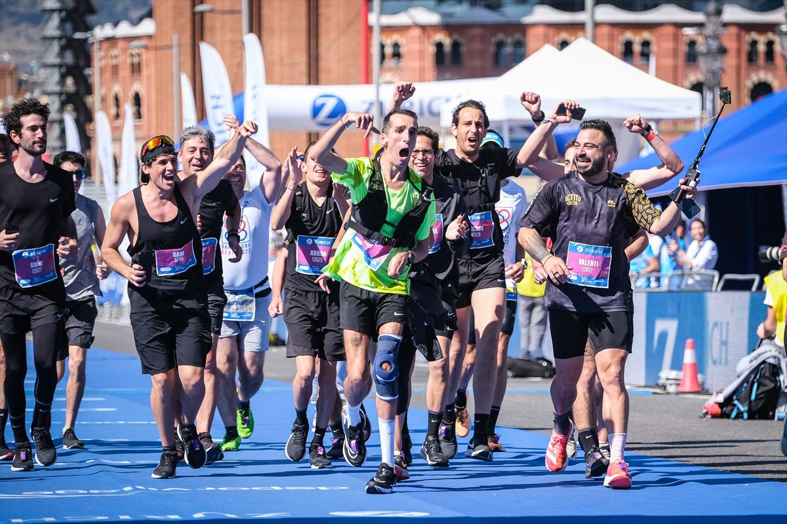
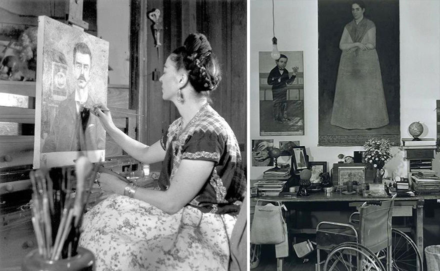
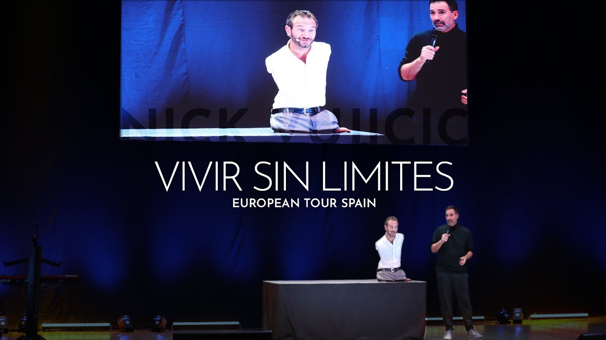
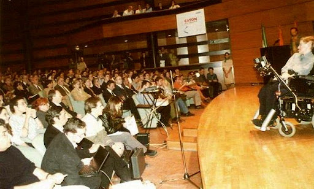

Conoce sus historias inspiradoras

Álex Roca
Atleta español con parálisis cerebral que completó la Maratón de Barcelona.

Pablo Pineda
Primera persona con síndrome de Down en España en obtener un título universitario.
Hansel Emmanuel
Modelo dominicano con albinismo que rompe barreras en la industria de la moda.
Bethany Hamilton
Surfista profesional que perdió su brazo izquierdo en un ataque de tiburón.

Frida Kahlo
Artista mexicana famosa por su fortaleza tras sufrir un grave accidente.

Lionel Messi
Uno de los mejores futbolistas del mundo, superó el enanismo en su infancia y fue diagnosticado del Síndrome de Asperger.

Nick Vujicic
Un conferencista motivacional y escritor australiano. Que nació sin brazos ni piernas, por el síndrome de Tetra-amelia.

Stephen Hawking
Uno de los cientificos más importante de la historia. Que sufrió de una ELA (esclerosis lateral amiotrófica) durante 55 años.